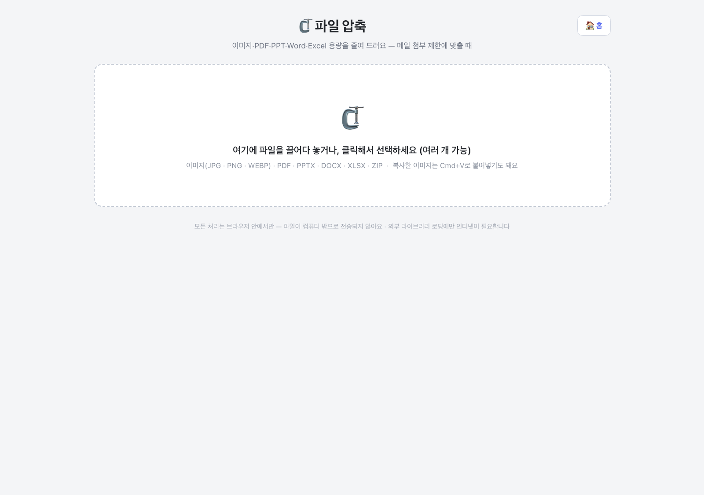
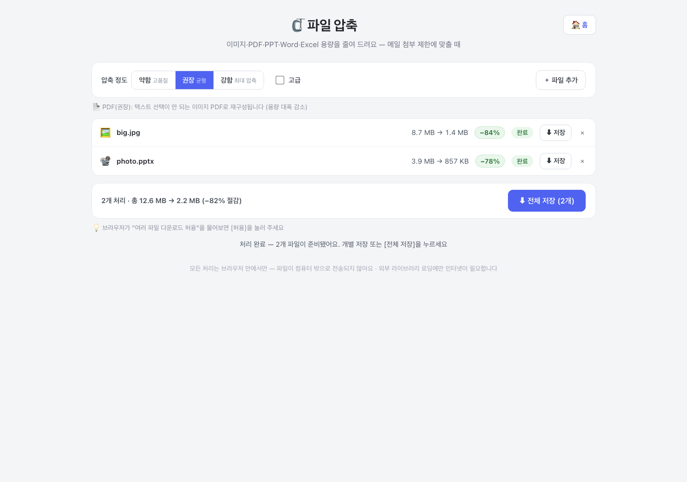
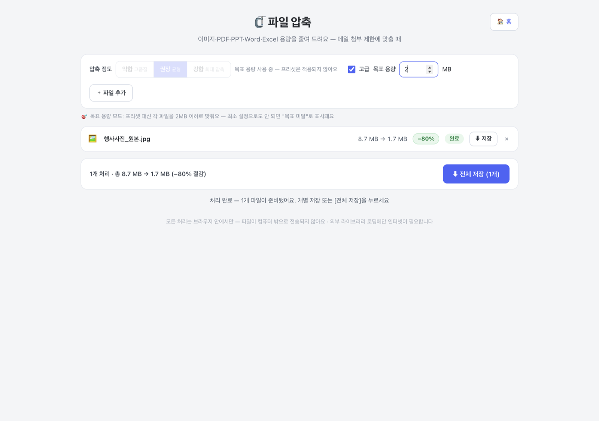

이미지(JPG·PNG·WEBP), PDF, 오피스 문서(PPTX·DOCX·XLSX), ZIP까지 넣을 수 있어요. 여러 개를 한꺼번에 끌어다 놔도 되고, 복사한 이미지는 Cmd+V로 붙여넣어도 됩니다. 넣자마자 권장 설정으로 자동 압축이 시작돼요. 파일을 더 넣으려면 [＋ 파일 추가]를 누르세요.

위쪽 압축 정도 버튼 세 개 중 하나를 고르면 전체 파일이 자동으로 다시 압축돼요.
· 약함(고품질) — 화질 우선. 대신 감소 폭은 작아요.
· 권장(균형, 기본) — 대부분 이거면 충분합니다.
· 강함(최대 압축) — 화질을 양보하고 용량을 최대한 줄여요.
PDF는 하나만 기억하세요. 권장·강함으로 압축한 PDF는 용량이 크게 줄지만, 텍스트 선택(드래그·복사)이 안 되는 이미지 PDF로 다시 만들어져요. 텍스트를 살려야 하는 PDF는 [약함]을 쓰세요 — 내용은 그대로 두고 구조만 정리해서, 대신 감소 폭이 작습니다. 어느 쪽인지는 목록 위 안내 문구에도 항상 떠 있어요.

"메일 첨부가 10MB까지"처럼 맞춰야 하는 숫자가 정해져 있을 때는 [고급]에 체크하고 목표 용량에
숫자를 넣으세요 (예: 10). 그러면 압축 정도 대신 각 파일을 그 용량 이하로 맞춰 줘요.
파일이 여러 개면 파일마다 각각 적용됩니다.
목표 용량을 쓰는 동안에는 위의 압축 정도 버튼 세 개가 잠기고, 옆에 "목표 용량 사용 중 — 프리셋은 적용되지 않아요"라는 안내가 떠요. 말 그대로 이 모드에서는 약함·권장·강함이 무시되고 목표 숫자만 기준이 됩니다. 다시 압축 정도로 돌아가려면 [고급] 체크를 끄거나 목표 숫자를 지우세요 — 버튼이 바로 풀립니다.

파일마다 원래 용량 → 줄어든 용량과 절감률(예: −84%)이 표시돼요. 개별 [⬇ 저장]을 누르거나, 아래 [⬇ 전체 저장]으로 한 번에 받으세요. 저장 파일명은 원본명_압축.확장자입니다.
알아 두면 좋은 세 가지 —
· "원본 유지"는 고장이 아니라 줄일 게 없어서 원본을 그대로 돌려준다는 뜻이에요. 두 경우가 있는데,
"이미 최적화된 파일이에요"는 압축해 봤더니 원본보다 의미 있게 작아지지 않은 경우,
"줄일 수 있는 이미지가 없어요"는 ZIP·오피스 문서 안에 압축 대상 이미지가 아예 없는 경우(벡터 도형·비디오
등만 있을 때)입니다. 둘 다 원본이 그대로 저장돼요.
· 투명 배경이 없는 PNG는 용량이 훨씬 작은 JPG로 바꿔서 줄여요. 파일 줄에 [PNG→JPG] 체크박스가
생기는데, PNG를 꼭 유지해야 하면 체크를 끄세요 (투명 PNG는 애초에 투명을 그대로 지켜요).
· PPT·Word·Excel은 안에 든 이미지만 줄이고 문서 형식은 건드리지 않아요. 압축한 뒤에도 똑같이 열어서 편집할 수 있습니다.